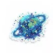
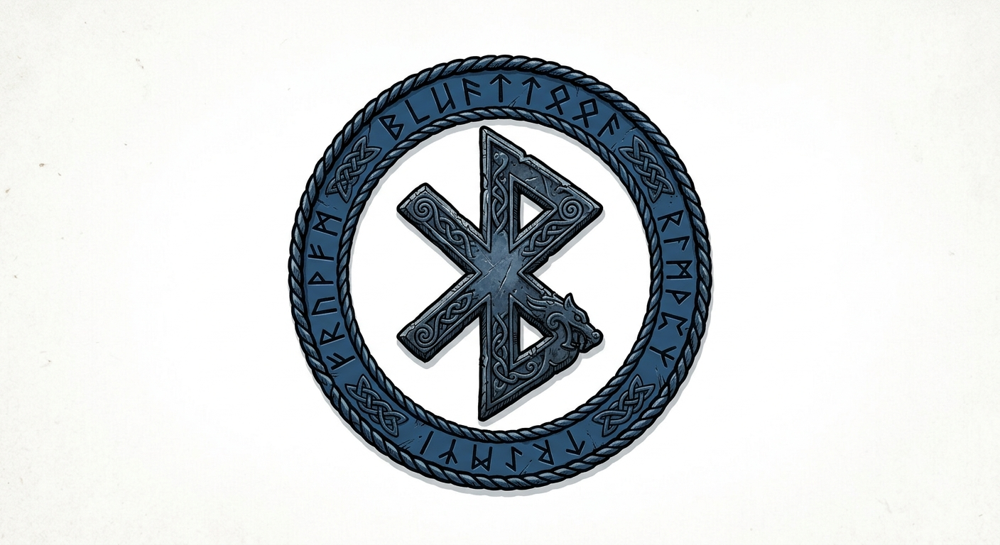
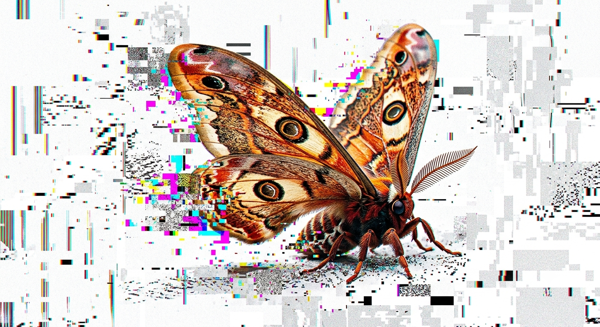
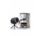
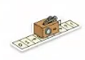

Meu primeiro post
Por: Gabriel Alexandre
Boas-Vintas ao meu novo blog! Aqui vou compartilhar dicas de programação e curiosidades da área de tecnologia.
Vou compartilhar conhecimentos sobre tecnologia e programação
Por: Gabriel Alexandre
Boas-Vintas ao meu novo blog! Aqui vou compartilhar dicas de programação e curiosidades da área de tecnologia.

Por: Gabriel Alexandre
Estima-se que 90% de todos os dados xistentes no mundo hoje foram gerados apenas nos útimos dois anos. Vivemos em uma verdadeira explosão de informação que não para de acelerar.
Por: Gabriel Alexandre
Antes do design ergonômico e das luzes RGB, o primeiro mouse do mundo foi construido em maeira! Criado por Douglas Engelbart em 1964, ele tinha o formado de uma caixa quadrada e apenas um botão.

Por: Gabriel Alexandre
O nome é uma homenagem ao rei viking Harald Blatand Gormsson, que unificou tribos da Escandinávia. Seu apelido era Harald "Bluetooth" porque seus dentes eram tão podres que tinham uma coloração azul escura.

Por: Gabriel Alexandre
O termo "bug" (inseto) para erros de software ficou famoso em 1947, quando engenheiros encontraram uma mariposa real presa dentro do computador Harvard Mark II, causando uma falha no sistema.

Por: Gabriel Alexandre
Em 1991, pesquisadores da Universidade de Cambridge criaram a primeira webcam para não perderem tempo indo até a cozinha e encontrando a cafeteira vazia. Eles monitoravam o nível do café em tempo real nos seus monitores.

Por: Gabriel Alexandre
Apesar de Alan Turing ser conhecido como pai da computação, ele não criou o primeiro computador. Entre os primeiros computadores, um deles foi chamado Colossus projetado por Tommy Flowers durante a Segunda Guerra Muntial e também, praticamente na mesma época, o ENIAC foi projetado por J. Presper Eckert e John Mauchly.
Embora o Colossus tenha funcionado antes como um "herói de guerra" espesializado, o ENIAC é frequentemente chamado de "pai" por ser o primeiro programável de uso geral.
E aí, qual você considerarias como o primeiro computador?